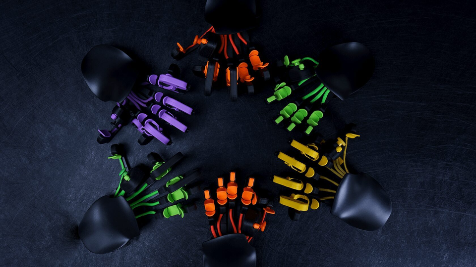
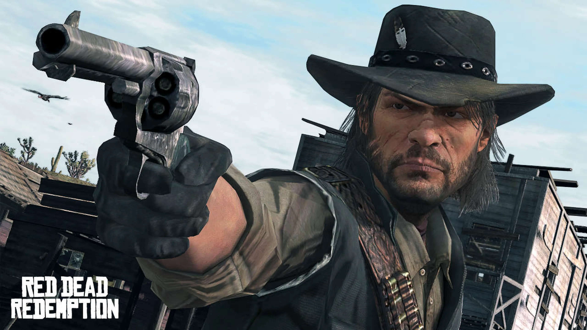

Azeron Keypad
Este es el mando de PC más loco que hemos usado nunca, ya has visto antes los mandos de los juegos, casi siempre son los mismos, con palanca de pulgar, gatillos y botones, pero Azeron está haciendo algo realmente diferente.
Descubre Azeron
La bestia de próxima generación está aquí!
Presentamos AZERON CYBORG: el teclado Azeron de próxima generación que eleva el listón en los juegos con una capacidad de ajuste aún más profunda y una comodidad excepcional. ¡Después de acostumbrarte a esta bestia, nunca mirarás atrás! ¡Aplasta a todos con simples movimientos de los dedos!
Red Dead Redemption 2 tendrá versión para PS5 y Xbox Series, según la filtración de Xbox
Una versión de Red Dead Redemption 2 para la novena generación de consolas (PS5 y Xbox Series X/S) aparece reflejada en el famoso documento sin censurar de Microsoft que se ha filtrado hoy.
Hoy ha salido a la luz un documento de Microsoft que refleja los planes de Xbox desde ahora hasta 2030, un archivo que sirve como prueba en el juicio contra la FTC (Comisión Federal de Comercio de Estados Unidos) y que debería haberse publicado con censura, pero no ha sido así. Esto nos ha dejado conocer detalles como que hay una revisión de Xbox Series X/S en camino o que Microsoft estuvo interesada en comprar Nintendo y Valve, entre muchas otras cosas.
En el documento también aparecen reflejados juegos de terceros que Xbox quería ofrecer de lanzamiento en Xbox Game Pass, su servicio de juego por suscripción. Llama la atención la presencia de uno de ellos: Red Dead Redemption 2. El juego se lanzó en 2018, ¿por qué aparece como juego que ofrecer día uno en Game Pass si el documento es del año pasado? La respuesta la tenemos en esa misma tabla: se habla de una versión de la novena generación, es decir, PS5 y Xbox Series X/S.
¿Es Mortal Kombat 1 una de las mejores entregas de la saga? Esto es lo que ha dicho la crítica
Mortal Kombat 1, la nueva entrega de la saga de lucha más sangrienta y visceral de los videojuegos, ya está disponible para PS5, Xbox Series X/S, Nintendo Switch y PC. Como ya es costumbre, en Freakshop hemos decidido llevar a cabo una pequeña recopilación de las conclusiones a las que han llegado los medios de prensa especializados tras jugar al título y que podemos encontrar tanto en Metacritic como en OpenCritic.

Por otra parte, en OpenCritic podemos ver que un 95 % de los periodistas recomiendan el juego desarrollado por NetherRealm Studios, mientras que el porcentaje en el caso de los Críticos Top es del 85 %. Podría decirse, por tanto, que estamos ante una entrega que ha mantenido la calidad a la que la serie nos tiene acostumbrados.